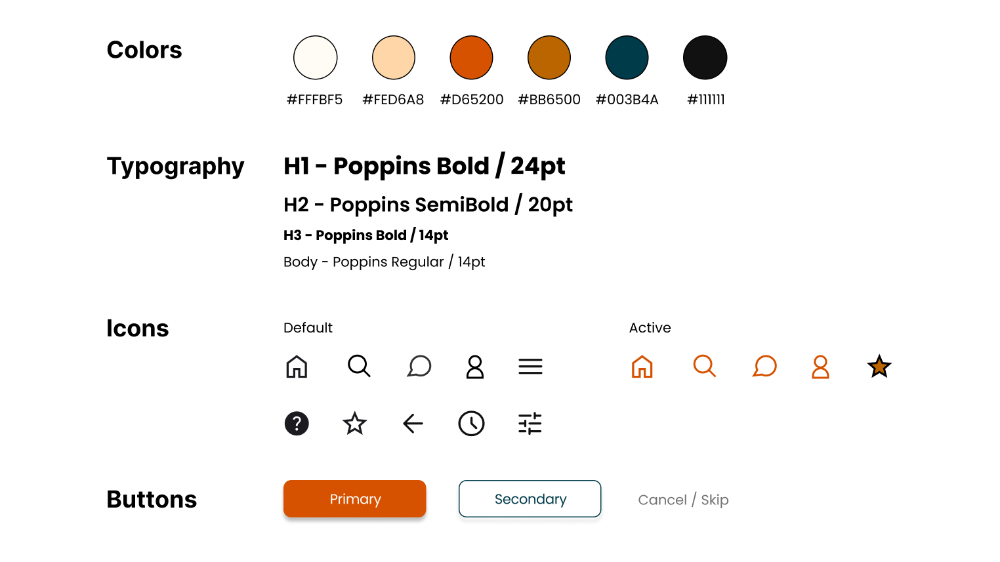

BEAUTIFY
Conception d'une plate-forme inclusive et intuitive pour rendre la beauté accessible à toutes et tous.
Catégorie : Projet universitaire
Période : Janvier - Mai 2022
Outils : Miro, Figma, Notion
Mentors : François Violette, Marie Girard
Team : Cindy Long, Adeline Poumaroux, Ines Tabti-Benhari, Diane Volpelière
Beautify vise à rendre l'univers du maquillage plus inclusif à travers une représentation plus large et un meilleur accès à des conseils personnalisés.
- Objectifs : Concevoir une plate-forme intuitive permettant à chacun de trouver facilement des produits et techniques adaptés à ses caractéristiques physiques.
- Compétences appliquées : Entretiens utilisateurs, Analyse compétitive, Persona, Carte d'empathie, Parcours utilisateurs, Maquettage, Prototypage, Tests utilisateurs.
- Solutions apportées : Un quiz permettant de déterminer des recommandations personnalisées, une diversité de la représentation.
De vos caractéristiques physiques à votre type de peau, votre beauté est unique : il n'y en a aucune autre comme la vôtre. Mais à l'ère de l'information de masse, trouver les produits et techniques appropriés qui mettront en valeur VOS caractéristiques physiques devient de plus en plus difficile – particulièrement dans un univers dominé par les personnes blanches, jeunes et cisgenres féminines.
Notre mission
Aider tous nos utilisateurs à trouver facilement les produits et techniques correspondants à leurs caractéristiques physiques grâce à une plate-forme intuitive et inclusive.
🔍
Empathie
Entretiens utilisateurs
Pour ce projet universitaire fictif, et en raison de contraintes de temps, les membres de l'équipe avaient pour consigne d'interroger une personne chacune. Cependant, il convient de noter qu'un panel d'utilisateurs plus large aurait été nécessaire pour un projet réel.
Profils
| Personne 1 | Personne 2 | Personne 3 | Personne 4 | Personne 5 | |
|---|---|---|---|---|---|
| Genre | ♀ | ♀ | ♀ | ♂ | ♀ |
| Âge | 32 ans | 52 ans | 20 ans | 22 ans | 59 ans |
| Niveau | Intermédiaire | Débutante | Avancé | Intermédiaire | Débutante |
Questions & Enseignements
| 🤔 Questions | 💡 Enseignements |
|---|---|
| "Quelle est votre relation avec le maquillage ?" | |
| "Quelles sont les raisons qui vous encouragent à porter du maquillage / à apprendre à mettre du maquillage ?" | Toutes les personnes interrogées ont mentionné la confiance en soi comme principale raison de porter du maquillage. |
| "À quels critères êtes-vous attentif lors de l'achat de produits de beauté ?" | Les personnes interrogées sont principalement attentives :
|
| "Quelles techniques de maquillage que vous ne maîtrisez pas encore aimeriez-vous apprendre ? Qu'est-ce qui vous en a empêché jusqu'à présent ?" | Les personnes interrogées ont toutes mentionné différentes techniques de maquillage qu'elles aimeraient apprendre. Les techniques mentionnées semblent correspondre à leur niveau respectif : les débutants ont mentionné des techniques de base comme l'application de rouge à lèvres ("quelle teinte dois-je choisir en fonction de ma couleur de peau ?"), tandis que les personnes de niveau avancé ont mentionné des techniques plus complexes comme le contouring ("je ne comprends pas la forme de mon visage"). La principale raison mentionnée pour ne pas apprendre ou maîtriser ces techniques est de ne pas savoir par où commencer en raison de la multitude de contenus beauté disponibles. |
| "Où cherchez-vous habituellement de l'inspiration ou des conseils de maquillage ?" | Les personnes interrogées plus jeunes aiment regarder des vidéos YouTube ou TikTok pour l'inspiration maquillage tandis que les personnes plus âgées préfèrent les articles de magazines. |
| "Dans quelle mesure vous sentez-vous généralement représenté dans les médias de beauté (en fonction de votre couleur de peau, âge, etc.) ?" | Les personnes interrogées non blanches, masculines et plus âgées se sentent sous-représentées dans les médias de beauté. |
Analyse compétitive
| Sephora | Nocibe | Cosmopolitan | kleo beaute | MarionCameleon | |
|---|---|---|---|---|---|
| Type de site web | Vente en ligne | Vente en ligne | Site de magazine | Blog | Chaîne YouTube |
| Vente de produits | ✓ | ✓ | ✗ | ✗ | ✗ |
| Actualités | ✓ | ✗ | ✓ | ✓ | ✗ |
| Tutoriels | ✓ | ✓ | ✗ | ✓ | ✓ |
| Commentaires | ✓ | ✓ | ✗ | ✓ | ✓ |
| Conseils génériques | ✓ | ✓ | ✗ | ✓ | ✓ |
| Conseils personnalisés | ✗ | ✗ | ✗ | ✗ | ✗ |
| Représentation | Satisfaisante | Satisfaisante | Satisfaisante | Limitée | Limitée |
🎯
Définition
Persona utilisateur
Carte d'empathie
Parcours utilisateur
"Acheter des produits de beauté" :
Énoncé du problème
L'utilisateur aime porter du maquillage pour l'aider à renforcer sa confiance en soi, mais a du mal à apprendre les techniques de maquillage et choisir les produits adaptés dans un monde de marketing en constante évolution et d'information de masse où les contenus beauté sont sans fin et la diversité de la représentation est faible.
💡
Idéation
Crazy 8
Les 6 idées principales issues de notre atelier sont les suivantes :
Quiz :
Les utilisateurs peuvent répondre à un quiz pour obtenir des suggestions et des conseils personnalisés tout au long de leur expérience sur l'application.
Recherche :
Sections dédiées aux Produits et Tutoriels avec des filtres pour mieux aider les utilisateurs à trouver ce qu'ils cherchent.
Diversité :
Montrer un panel diversifié de modèles pour s'assurer que chaque utilisateur se sente représenté et dispose de contenu auquel il peut s'identifier.
Communauté :
Les utilisateurs peuvent interagir avec des personnes qui partagent leurs préoccupations, poser des questions, donner des conseils... et se sentir membres d'une communauté.
Cashback :
Les utilisateurs peuvent gagner du cashback sur les achats de produits de beauté effectués sur les boutiques partenaires en ligne via l'application.
Look & Feel familier :
Un look & feel similaire à Instagram et Pinterest pour rendre l'application facile à prendre en main pour les utilisateurs.
📐
Prototypage
Prototypes


Design System
✅
Test
Pour les tests utilisateurs, nous avons réutilisé le même panel d'utilisateurs que dans l'Étape 1.
| À propos de... | 🤔 Questions | 💡 Enseignements |
|---|---|---|
| Onboarding | "Décrivez les illustrations des trois premiers écrans en 3 adjectifs." | Les personnes interrogées ont utilisé les adjectifs suivants : chaleureux, stimulant, amusant, attrayant, (femmes) fortes, doux, confiance. |
| Quiz | "Sur une échelle de 1 à 5, à quel point les questions et réponses vous semblent-elles claires ?" (1 - Pas claires du tout / 5 - Très claires) | La note moyenne pour cette question est de 4,8/5 (4 personnes interrogées ont répondu 5/5 ; 1 personne a répondu 4/5). |
| Quiz | "Trouvez-vous le bouton d'aide utile ?" (Oui - Non - Je n'ai pas vu ce bouton) | Toutes les personnes interrogées ont répondu "Oui". |
| Général | "Commentez tout ce qui vous vient à l'esprit en naviguant dans l'application." | 👍 :
|
| Général | "Le langage et les termes utilisés dans l'application vous semblent-ils appropriés ?" (1 - Pas appropriés du tout / 5 - Parfaitement appropriés) | La note moyenne pour cette question est de 4,8/5 (4 personnes interrogées ont répondu 5/5 ; 1 personne a répondu 4/5). |
| Général | "Quelles seraient les fonctionnalités manquantes selon vous ?" | Une personne interrogée a mentionné "une barre de recherche dans la section Communauté" comme amélioration de fonctionnalité. Une personne interrogée a mentionné "des articles courts" comme un plus. |
| Général | "Sur une échelle de 1 à 5, à quel point est-il facile de naviguer dans l'application ?" (1 - Pas intuitive du tout ; 5 - Très intuitive) | La note moyenne pour cette question est de 5/5 (toutes les personnes interrogées ont répondu 5/5). |
| Général | "D'autres commentaires ?" | "J'apprécie de voir autant de visages différents et de types de peau, et les photos des produits me donnent envie de tous les essayer !" ; "Quand l'application sera-t-elle lancée ? J'en ai besoin !" ; "C'est parfait, je suis très impressionné(e)." |
Améliorations potentielles dans les mises à jour ultérieures basées sur les retours des utilisateurs :
- Ajouter une barre de recherche dans la section Communauté pour permettre aux utilisateurs de rechercher des mots-clés et de trouver plus facilement des sujets et des publications d'intérêt.
- Ajouter des titres sur les vignettes des tutoriels en vue galerie pour garantir une identification plus facile ainsi qu'une cohérence dans toute l'application.
- Ajouter le prix (ou la fourchette de prix) sur la fiche d'information du produit, car le budget est un critère important pour nos utilisateurs lors de l'achat de produits de beauté.